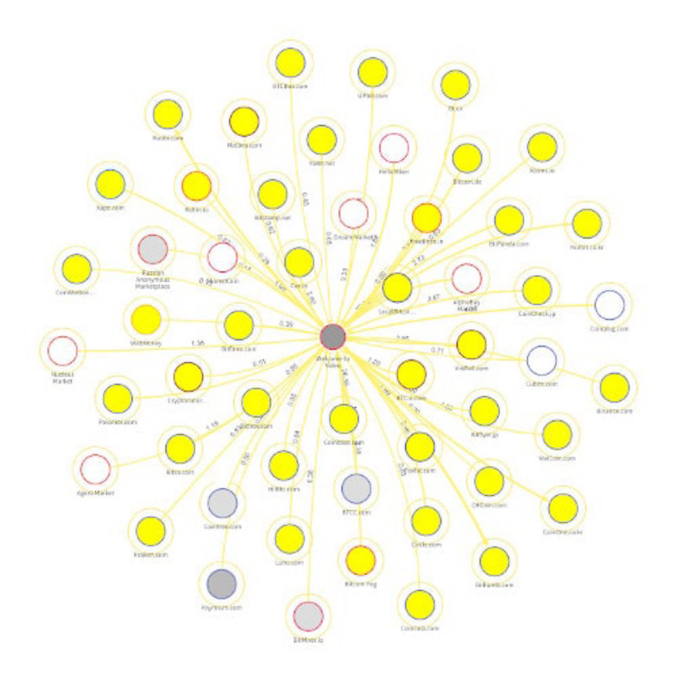
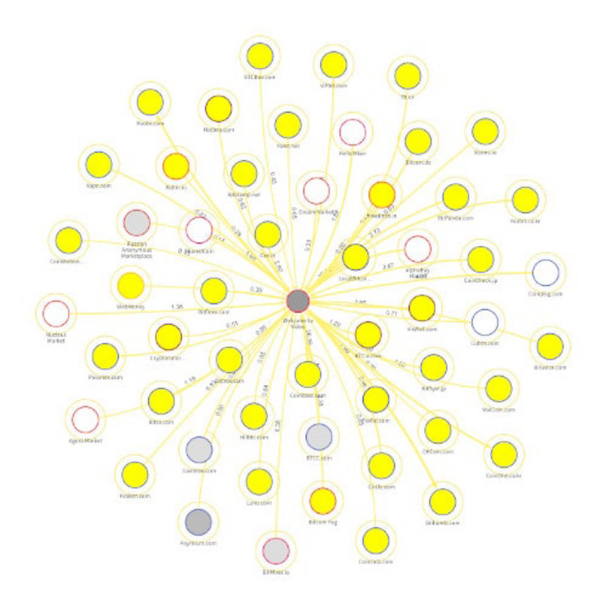

German Officials Claim Monero is Untraceable
~3 min read | Published on 2019-10-23, tagged General-News using 685 words.
The German Federal Ministry of Finance claimed that Monero and other privacy coins make tracing money impossible and thus lend themselves to criminal activity on the darkweb, money laundering, and terrorist financing.
The report highlighted the lack of anonymity provided by Bitcoin as the reason for the growing popularity of privacy coins. Darkweb market users still use Bitcoin more than any other cryptocurrency; the current popularity of Bitcoin in this context is apparent even without the reports from government agencies and blockchain analysis firms. Nevertheless, the agency found that the current money-laundering risk was only “medium-low.” The agency claimed that some users attempt to keep their transactions private through mixers and tumblers and also that criminals could go to bizarre lengths to conceal the source of their illegally earned cryptocurrency.
Furthermore, it is conceivable that offenders ostensibly operate their own mining equipment and declare their illegal cryptocurrencies as a product of this mining so as to disguise their illegal origin. The procurement of relatively expensive mining equipment […] may already be financed by incriminated funds.

This failed to work in the case of Silk Road vendor Pharmville who told an exchange that he had earned roughly $19 million in Bitcoin and Bitcoin cash by mining Bitcoin and investing $10,000 in Bitcoin.
The exchange froze Haney’s account on May 30 after Haney had transferred approximately 1,571.5 Bitcoins and approximately 1,572.7 Bitcoin Cash to the exchange. He exchanged the cryptocurrency for a total of $19,147,057.3. Haney sent the bitcoin and bitcoin cash to the exchange between January 26 and February 1, 2018. The exchange asked where Haney had acquired such a tremendous number of bitcoins. Haney responded that he had earned the bitcoin through an initial investment of $10,000 and by mining bitcoin. They disagreed and froze the account. Law enforcement then learned of the suspicious transaction and launched an investigation into the source of the funds.
Despite the evidence to the contrary, the agency claimed that the risk of “illegal activity” with Bitcoin was low. Reports from other authorities, such as Europol’s IOCTA, found substantial evidence that Bitcoin was used for criminal activity on the darkweb. This activity, of course, is primarily linked to drug and fraud markets instead of terrorist financing. Only two Monero-only darkweb marketplaces of substance exist: White House Market and Monopoly Market. Although other markets either accept Monero or have considered accepting Monero, the largest marketplaces accept only Bitcoin and the typical altcoins. A poll on SamSara Market about Monero integration currently has 970 in support of the addition of Monero and 330 in opposition of the change.
To date, very little evidence linking cryptocurrency to terrorist financing exists. (However, some private studies have reportedly identified connections between cryptocurrency and terrorism.) Government agencies continue to link cryptocurrencies to terrorist financing, even if they acknowledge the lack of substantial evidence connecting any significant terrorist financing through cryptocurrency.
The Federal Ministry of Finance wrote that Monero was “impossible to track” and that it could “gain more acceptance” on the darkweb and become a “real” alternative to Bitcoin.
However, the cryptocurrencies that provide users with complete anonymity and whose transactions are untraceable are prone to money laundering are (for example, Monero, Zcash). The anonymity of the users makes it easy to obscure the transactions, making it impossible to track money. The complete anonymity also increases the possibility of abuse for further criminal activities.
Even with privacy coins, the agency yielded that the current risk of terrorist financing through crytpocurrency was low.
The risk of using cryptocurrencies for the terrorist financing is currently classified as low. An increase in the risk potential in the coming years, depending on various developments, can not be ruled out.
The only action recommended by the agency at this time was the amendment of German legislation to more clearly define the responsibility of cryptocurrency exchanges, custodial wallet providers, and other so-called “obligated parties.” The report revealed very little new information. And the agency had no real solution for countering the use of privacy coins by criminal organizations or for criminal purposes.
The full report is available here: bundesfinanzministerium.de (PDF warning)
The report highlighted the lack of anonymity provided by Bitcoin as the reason for the growing popularity of privacy coins. Darkweb market users still use Bitcoin more than any other cryptocurrency; the current popularity of Bitcoin in this context is apparent even without the reports from government agencies and blockchain analysis firms. Nevertheless, the agency found that the current money-laundering risk was only “medium-low.” The agency claimed that some users attempt to keep their transactions private through mixers and tumblers and also that criminals could go to bizarre lengths to conceal the source of their illegally earned cryptocurrency.
Furthermore, it is conceivable that offenders ostensibly operate their own mining equipment and declare their illegal cryptocurrencies as a product of this mining so as to disguise their illegal origin. The procurement of relatively expensive mining equipment […] may already be financed by incriminated funds.

A Graph of Bitcoin Transactions Traced to and from WTV by Chainalysis | Chainalysis
This failed to work in the case of Silk Road vendor Pharmville who told an exchange that he had earned roughly $19 million in Bitcoin and Bitcoin cash by mining Bitcoin and investing $10,000 in Bitcoin.
The exchange froze Haney’s account on May 30 after Haney had transferred approximately 1,571.5 Bitcoins and approximately 1,572.7 Bitcoin Cash to the exchange. He exchanged the cryptocurrency for a total of $19,147,057.3. Haney sent the bitcoin and bitcoin cash to the exchange between January 26 and February 1, 2018. The exchange asked where Haney had acquired such a tremendous number of bitcoins. Haney responded that he had earned the bitcoin through an initial investment of $10,000 and by mining bitcoin. They disagreed and froze the account. Law enforcement then learned of the suspicious transaction and launched an investigation into the source of the funds.
Despite the evidence to the contrary, the agency claimed that the risk of “illegal activity” with Bitcoin was low. Reports from other authorities, such as Europol’s IOCTA, found substantial evidence that Bitcoin was used for criminal activity on the darkweb. This activity, of course, is primarily linked to drug and fraud markets instead of terrorist financing. Only two Monero-only darkweb marketplaces of substance exist: White House Market and Monopoly Market. Although other markets either accept Monero or have considered accepting Monero, the largest marketplaces accept only Bitcoin and the typical altcoins. A poll on SamSara Market about Monero integration currently has 970 in support of the addition of Monero and 330 in opposition of the change.
To date, very little evidence linking cryptocurrency to terrorist financing exists. (However, some private studies have reportedly identified connections between cryptocurrency and terrorism.) Government agencies continue to link cryptocurrencies to terrorist financing, even if they acknowledge the lack of substantial evidence connecting any significant terrorist financing through cryptocurrency.
The Federal Ministry of Finance wrote that Monero was “impossible to track” and that it could “gain more acceptance” on the darkweb and become a “real” alternative to Bitcoin.
However, the cryptocurrencies that provide users with complete anonymity and whose transactions are untraceable are prone to money laundering are (for example, Monero, Zcash). The anonymity of the users makes it easy to obscure the transactions, making it impossible to track money. The complete anonymity also increases the possibility of abuse for further criminal activities.
Even with privacy coins, the agency yielded that the current risk of terrorist financing through crytpocurrency was low.
The risk of using cryptocurrencies for the terrorist financing is currently classified as low. An increase in the risk potential in the coming years, depending on various developments, can not be ruled out.
The only action recommended by the agency at this time was the amendment of German legislation to more clearly define the responsibility of cryptocurrency exchanges, custodial wallet providers, and other so-called “obligated parties.” The report revealed very little new information. And the agency had no real solution for countering the use of privacy coins by criminal organizations or for criminal purposes.
The full report is available here: bundesfinanzministerium.de (PDF warning)